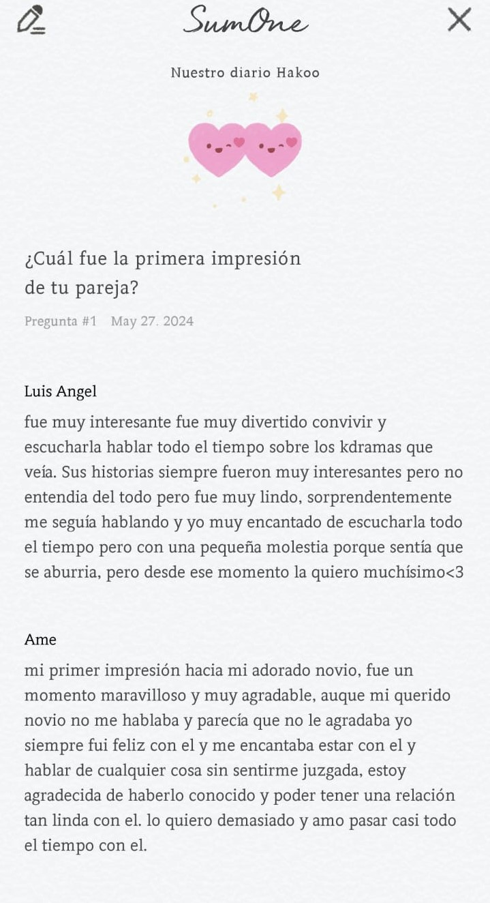

Iniciamos esta aventura teniendo a nuestra hija llamada Dalila, que va creciendo con nuestras respuestas.

Espero que disfrutes esta canción.
Iniciamos esta aventura teniendo a nuestra hija llamada Dalila, que va creciendo con nuestras respuestas.
Al inicio no entendia la manera de contestar las preguntas, pero gracias a ti lo pude entender y despues ya lo hice bien.
En el instante exacto en que mi corazón decidió amarte, sentí una felicidad indescriptible. Fue como si todas las piezas de mi vida encajaran de repente, y en ese momento supe que habías llenado un vacío que ni siquiera sabía que existía.
Me encantaría ver "Your Name" contigo porque es una historia que captura la magia del destino y el poder del amor. Quiero compartir contigo cada emoción que despierte esta película, desde la nostalgia hasta la esperanza, mientras estamos juntos y nos sumergimos en esta hermosa pelicula.
Nuestras conversaciones siempre son interesantes. Me gusta venir a leerlas, me hacen sentir bien.
Estoy emocionado por poder tener llamadas contigo próximamente, para escuchar cómo fue tu día o tu semana. Es un recurso que aún no hemos utilizado, y estoy ansioso por compartir esos momentos contigo, conectando aún más y fortaleciendo nuestro lazo con cada palabra que compartamos.
Contexto
Helado de limón, me gusta la paleta de limón. Tú puedes comer un helado mientras te acompaño con una paleta.
Aunque sorprendentemente nuestros gustos son muy diferentes, eso no ha sido ningún impedimento para que estemos juntos y felices. Me encanta que tengas intereses tan distintos y fascinantes, tanto que me he sumergido en ellos. Esto solo confirma cuánto te amo y cómo nuestros gustos diversos nos han permitido conocernos aún más profundamente. Estoy agradecido por cada diferencia que nos une, creando un vínculo único y enriquecedor entre nosotros.
Desde el momento en que te vi, me di cuenta de lo increíblemente hermosa que eres, y eso desencadenó un torbellino de emociones en mí. En ese instante, era como si solo existieras tú y nadie más. Me di cuenta de que te quiero solo a ti, porque tienes el encanto y la belleza que me cautivan completamente. Eres mi novia, la más hermosa, linda, maravillosa y especial del mundo entero.
Esta pregunta fue muy divertida ya que fue la primera vez que pusimos una respuesta muy diferente que me encanto tanto que ahora es mi fondo de chats
Disfruto cada momento que paso contigo, y una cita que sueño tener es un día de campo. Imagino sentarnos juntos frente a un paisaje hermoso, compartiendo conversaciones mientras saboreamos algo delicioso. Ver el atardecer pintar el cielo y dar paso a la noche sería perfecto, porque no hay nada más especial para mí que esos momentos compartidos contigo, donde cada instante se convierte en un recuerdo inolvidable.
Cada dia descubro que me gustas mucho mas y eso me hace extrañarte mucho mas.
Cuando estás molesta siempre me hace sentir mal, ya que sé que es por algo que hice mal y eso no te agrada. Siempre trato de encontrar una solución para que los dos volvamos a estar felices.
Sigo manteniendo mi respuesta, ya que normalmente eres puntual. Si en algún momento tienes algún contratiempo, normalmente me lo dices. Si en ese momento no me dices nada, obviamente me voy a preocupar e intentaré averiguar qué pasó e ir a verte a tu casita.
Una pregunta muy interesante al punto de que tuvimos que cmabiar de celulares para contestar
Dando las cualidades más importantes que encontré en ti, eso y más eres maravillosa. Todo de ti me encanta, como no tienes idea, incluso tus defectos. Es algo muy común decir que todo el mundo tiene sus defectos; yo tengo varios más defectos que algo bien jaja. Mi conclusión es que eres la persona con la que quiero pasar mucho más tiempo, hasta llegar a viejitos jijiji. Te amo muchoo.
Sinceramente, como otra cita o no sé cómo llamarlo, me gustaría cocinar algo contigo. Sería algo muy lindo y divertido que quisiera hacer. Espero que algún día lo hagamos, será muy divertido, mi amor.
La verdad, la primera vez que me invitaste a salir sentí una felicidad enorme, lo cual me puso muy nervioso y ansioso, pero fue muy bonito. Me gusta mucho salir contigo y estar a tu lado por horas, sin importar qué hagamos. Lo único que quiero es estar a tu lado.
Sería algo muy lindo de hacer. El problema es que no sé qué color me vendría bien. A ti todo te queda muy bien, siempre te ves muy linda. Pero igual no importa el color, compartir ese momento contigo es lo que más me gustaría hacer.
Esta es la pregunta que más curiosidad me da, sin tener un contexto específico para dar. Pero igual, no está mal sentir ese tipo de curiosidad; es un sentimiento normal. Lo importante fue aceptar que hemos llegado a sentirlo. Actualmente, ya no tengo nada para sentir celos o algo similar; eso ya quedó atrás. Pero igual te diría que me llegaría a molestar.